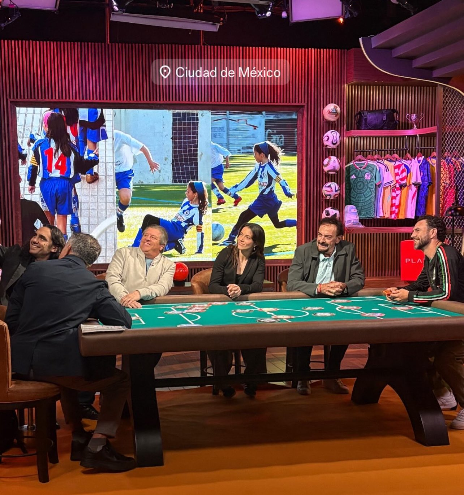

La triple Balón de Oro y figura del FC Barcelona confirmó en Rac1 que debutará como comentarista en la Copa del Mundo 2026, junto a la cadena mexicana TUDN. "Voy a salir de mi zona de confort, que es el campo, y a hablar de fútbol", dijo.

Aitana Bonmatí confirmó que este verano tendrá un rol inédito en su carrera: comentar partidos de la Copa del Mundo masculina 2026, que se disputa en México, Estados Unidos y Canadá. La futbolista se sumará al equipo de analistas de TUDN, la cadena de Televisa, con mayor participación en los partidos que dispute la selección española.
La propia Bonmatí explicó la decisión: "Me hace ilusión salir de mi zona de confort y verme en un nuevo escenario hablando de fútbol. Me enfocaré en aprender de los mejores." Participará en programas previos y posteriores a los partidos, además de análisis en directo.
Nacida el 18 de enero de 1998 en Sant Pere de Ribes, Cataluña, Aitana ingresó a La Masia del FC Barcelona a los 13 años y desde entonces no paró de crecer. Hoy es considerada la mejor futbolista del mundo y una de las más dominantes de la historia reciente del deporte.
Con el Barcelona ganó cinco campeonatos de Liga F, tres Champions League femeninas y múltiples Supercopas. Con la selección española levantó la Copa del Mundo en Australia y Nueva Zelanda 2023, siendo nombrada MVP del torneo por la FIFA.
Bonmatí ganó el Balón de Oro femenino en 2023 y 2024, convirtiéndose en la jugadora más premiada de su generación junto a Alexia Putellas. También se llevó el The Best de la FIFA, el premio UEFA a Mejor Jugadora de Europa y el Laureus al Mejor Deportista del Mundo, entre otros galardones.
En la temporada 2023-24 registró 19 goles y 17 asistencias, alcanzando además los 100 goles con la camiseta del Barcelona. Renovó su contrato con el club catalán hasta 2028.
Que una futbolista en activo sea convocada para comentar un Mundial masculino en una cadena de primer nivel es un hecho que no tiene antecedentes en la televisión latinoamericana. Para el fútbol femenino, es una señal clara de que sus figuras ya tienen el peso y la credibilidad para ocupar espacios que históricamente fueron exclusivos de voces masculinas.
Fuente: Rac1 / TUDN — femeninoinfo
Seguir leyendo